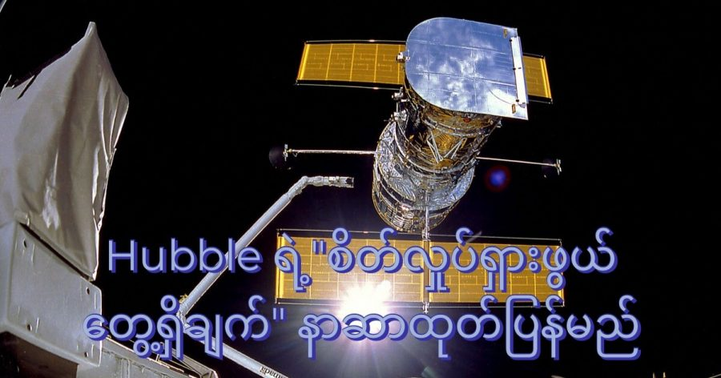

ဟတ်ဘယ် အာကာသ တယ်လီစကုပ်ကြီးရဲ့ လေ့လာ တွေ့ရှိချက် အသစ်ကို လာမယ့် မတ်လ ၃၀ ရက်နေ့မှာ ထုတ်ပြန် တင်ပြ သွားမယ်လို့ နာဆာ အဖွဲ့ကြီးက ထုတ်ပြန်တဲ့ ကြေငြာချက်မှာ ဖော်ပြ ထားပါတယ်။
နာဆာရဲ့ ထုတ်ပြန်ချက် အရ အခု တွေ့ရှိချက်ဟာ “စိတ်လှုပ်ရှားဖွယ် အသစ် တွေ့ရှိချက်” (exciting new observation) လို့ ဖော်ပြထားပြီး “မှတ်တမ်းတင် လောက်တဲ့ အောင်မြင်မှု” (one for the record books) လို့လဲ ဖော်ပြ ထားတာကို တွေ့ရှိရပါတယ်။ ဒီ ထုတ်ပြန်ချက်ကြောင့် နက္ခတ် ပညာရှင် အသိုင်းအဝိုင်း ကြားမှာ စိတ်လှုပ်ရှားလျှက် ရှိနေပါတယ်။
အခု တွေ့ရှိချက်ကို ဖော်ထုတ်ခဲ့တဲ့ ဟတ်ဘယ် တယ်လီ စကုပ်ကြီးဟာ အခုဆို သက်တမ်း ၃၂ နှစ်တောင် ရှိခဲ့ပါပြီ။
အခု တွေ့ရှိချက်ဟာ ဘာနဲ့ သက်ဆိုင်တဲ့တွေ့ရှိချက် ဖြစ်မလဲ ဆိုတာကိုတော့ မှန်းဆရ ခက်ခဲပါတယ်။ ဘာကြောင့်ဆို ဟတ်ဘယ် တယ်လီစကုပ်ရဲ့ လေ့လာမှု တွေဟာ နေအဖွဲ့အစည်း ပြင်ပက ပြင်ပဂြိုဟ် (exoplanet) တွေ ရှာဖွေရေးကနေ ဂလက်ဆီ တွေ လေ့လာရေးနဲ့ စကြာဝဠာရဲ့ ပြန့်ကားမှုကို လေ့လာရေး တွေအထိ ပါဝင်နေတာ မို့ပါ။
နာဆာရဲ့ ထုတ်ပြန် ချက်ထဲမှာလဲ အခု တွေ့ရှိချက်ဟာ ဘာဖြစ်မလဲ ဆိုတာကို ဖော်ပြထားခြင်း မရှိပါဘူး။
“ဟတ်ဘယ်ရဲ့ တွေ့ရှိချက်ဟာ ကျွန်တော်တို့ရဲ့ စကြာဝဠာ နဲ့ ပါတ်သက်တဲ့ နားလည်မှုကို ပိုမို ကျယ်ပြန့် လာစေရုံမျှ မက အသစ် လွှတ်တင်လိုက်တဲ့ ဂျိမ်းစ်ဝက်ဘ် တယ်လီစကုပ် ကြီးအတွက် အနာဂါတ် သုတေသန တွေအတွက် စိတ်လှုပ်ရှားဖွယ် သုတေသန နယ်ပယ်သစ် ကိုလဲ ဖန်တီးပေး ပါတယ်” ဆိုတာကိုပဲ ထည့်သွင်း ဖော်ပြ ထားပါတယ်။
ပြီးခဲ့တဲ့ ဒီဇင်ဘာ ၂၅ ရက်နေ့က လွှတ်တင်ခဲ့တဲ့ James Webb တယ်လီစကုပ် ကြီးဟာ ယခုအခါ ကြေးမုံ မှန်ဘီလူးတွေ နေရာချထားမှု ပြီးမြောက်သလောက် ရှိနေပြီး လာမယ့် ဇွန်လပိုင်းမှာ စတင် တာဝန် ထမ်းဆောင် နိုင်မယ်လို့ မျှော်လင့် ရပါတယ်။
ဟတ်ဘယ် တယ်လီစကုပ်ကတော့ ၁၉၉၀ ဧပြီ ၂၅ က လွှတ်တင် ခဲ့တာမို့ လာမယ့် ဧပြီ ၂၅ ရက်နေ့မှာ ၃၂ နှစ်ပြည့် မွေးနေ့ကို ကျင်းပနိုင်တော့မှာ ဖြစ်ပါတယ်။
ဂျိမ်စ်ဝက်ဘ် တယ်လီစကုပ် ကြီးကို ဟတ်ဘယ် ရဲ့ တာဝန်တွေ ဆက်ခံမယ့် တယ်လီစကုပ်ကြီး အနေနဲ့ နာဆာက ပြောဆိုပေမယ့် ဟတ်ဘယ်ကို လက်ရှိမှာ အနားပေးဖို့ မရည်ရွယ် သေးပါဘူး။ အနည်းဆုံး ဒီ ဆယ်စုနှစ် ကုန်ပိုင်းအထိ ဆက်လက် တာဝန်ထမ်းဆောင် သွားဖို့ ရည်ရွယ်ထားပါတယ်။
ဒါပေမယ့် ဟတ်ဘယ် တယ်လီစကုပ်ကြီးရဲ့ ကြံ့ခိုင်မှု ကလဲ အားနည်းလို့ လာနေပါပြီ။ ပြီးခဲ့တဲ့ ၂၀၂၁ အောက်တိုဘာ လက စက်ချို့ယွင်းမှု တစ်ခုကြောင့် သီတင်းပတ်ပေါင်း များစွာ အနားပေး ခဲ့ရပါတယ်။ ဒီ့အရင် ၂၀၂၁ ဇူလိုင်လကလဲ ကြီးမားတဲ့ ချို့ယွင်းမှု တစ်ခု ဖြစ်ခဲ့ပါ သေးတယ်။
ယခင် လွန်းပျံယာဉ် စီမံကိန်း ရှိခဲ့စဉ်က တော့ ဟတ်ဘယ် တယ်လီစကုပ် ကြီးကို ပုံမှန် ထိန်းသိမ်း ပြုပြင်ရေး ပြုလုပ်နိုင်ခဲ့ပါတယ်။ ဒါပေမယ့် ၂၀၁၁ မှာ လွန်းပျံယာဉ် စီမံကိန်းကို ဖျက်သိမ်းလိုက် ပြီးတဲ့နောက် ဟတ်ဘယ်ကို ပြုပြင် ထိန်းသိမ်းရေး မလုပ်ဆောင်နိုင် တော့ပါဘူး။
ဂျိမ်းစ်ဝက်ဘ် တယ်လီစကုပ် ကြီးကတော့ ကမ္ဘာကနေဆို မိုင်ပေါင်း ၂.၉ သန်းကျော် အကွာအဝေးမှာ ရှိတာမို့ ဒီလို ပြုပြင် ထိန်းသိမ်းရေး ပြုလုပ်နိုင်ဖို့ ဘယ်လိုမှ မဖြစ်နိုင် ပါဘူး။
မတ် ၃၀ ရက်နေ့မှာ ထုတ်ပြန်မယ့် “မှတ်တမ်းတင် လောက်တဲ့ တွေ့ရှိမှု” ကို သိပ္ပံ အဖွဲ့သား များက သတင်း ရရှိလျင် ရရှိခြင်း အမြန်ဆုံး တင်ဆက်ပေးသွားမယ် ဆိုတဲ့ အကြောင်း ကြိုတင် အသိပေး အပ်ပါတယ်။
Reference: NASA to announce Hubble Space Telescope discovery next week | Space
Hubble တယ်လီစကုပ်ကြီး၏ “စိတ်လှုပ်ရှားဖွယ် တွေ့ရှိချက်” ၃၀ ရက်နေ့တွင် တင်ပြမည်ဟု နာဆာကြေငြာ

March 28, 2022
Other Posts
- အမြင်အာရုံလှည့်စားတဲ့ ဓါတ်ပုံရဲ့ လှို့ဝှက်ချက်
- သင့်ကြောင်ဟာ ဘယ်သန်လား ညာသန်လား
- စကြာဝဠာကနဦးမှ ရှေးအကျဆုံး black hole တွင်းနက်ကြီး ဂျိမ်းစ်ဝက်ဘ် ရှာတွေ့
- သုက်ပိုးကို ရေကူးနိုင်အောင်ကူမယ့် နာနိုစက်ရုပ်
- အိပ်မပျော်ရင် အိပ်ပျော်အောင် ဘယ်လိုလုပ်မလဲ
- နေအဖွဲ့အစည်း ဝန်းကျင်တွင် ဂြိုဟ်အသစ် ၅၉ စင်း ရှာဖွေတွေ့ရှိ
- သမုဒ္ဒရာ ကြမ်းပြင်မှ မီးတောင် ၁၉,၀၀၀ ကျော် ရှာတွေ့
- ပျောက်ဆုံးနေသော မာယာရှေးမြို့ဟောင်း မက္ကဆီကို တောနက်ကြီးထဲတွင် ရှာတွေ့
- ပေါက်ကွဲလုလု ကြယ်ကြီးတစင်းရဲ့ ပုံကို ဂျိမ်းစ်ဝက်ဘ် က အမိအရ ရိုက်ယူနိုင်ခဲ့
- နေအဖွဲ့အစည်းရှိ ဂြိုလ်များနဲ့ တူတဲ့ ဂြိုလ်အချို့ အိမ်နီးချင်းကြယ်တွင် ရှာဖွေတွေ့ရှိ